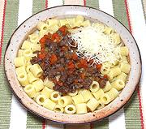

|
Sausage & Carrot Sauce for PastaItaly - Salsa d'Salsiccia e Carota | ||||
| For 1 # Effort: Sched: DoAhead: |
Pasta ** 1 hr Yes |
The chunkiness of this light meat sauce is particularly suited for use with small firm shapes, like the ditali rigate in the photo. For this reason It is better for a pasta course than a main dish. | |||
|
|
8 3 4 4 1 1 1 1 1/2 1/2 1/4 1 ---- |
oz oz oz oz T T c t t # --- |
Sausages (1) Celery Carrot Onion Chili red dry Olive Oil Butter Bouillon cube (2) Wine, Dry Red Salt Pepper Pasta --- Garnish Parmesan Cheese |
The sauce very much takes on the character of the sausage, so use a good tasting well seasoned one, preferably Italian. Leftovers would be good for stuffing a breakfast omelet. Prep - (25 min)
|